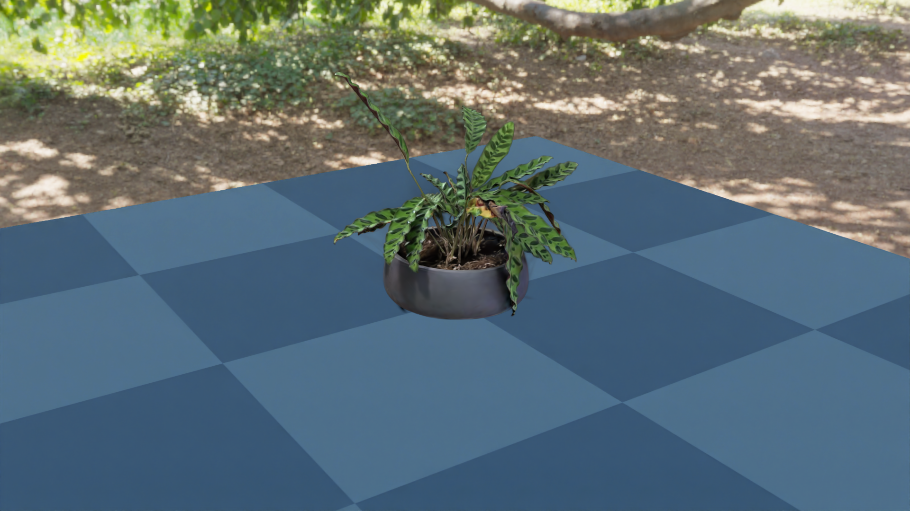

Gaussian splat#
A captured Gaussian splat composited into a live Genesis scene, lit by a single directional sun. The cactus is a .ply radiance field; the plane it sits on is a stock gs.morphs.Plane. Both are rendered in the same Nyx frame.

What it shows#
Loading a 3D Gaussian Splatting
.plyfile as aLightFieldAssetand attaching it to the camera throughlight_fields.Mixing the splat with simulated geometry (a Genesis
Plane) lit by a single directional light. The plane is shaded by the sun; the cactus’s appearance is whatever the splat baked in at capture time.
How the splat is declared#
A splat is a LightFieldAsset with ELightFieldType set to GaussianField. Set its uri to a .ply (Inria-style 3DGS) or .spz (compressed) file, then hand it to the camera:
import gs_nyx.nyx_py_sdk as nps
cactus = nps.LightFieldAsset()
cactus.type = nps.ELightFieldType.GaussianField
cactus.uri = "examples/assets/cactus.ply"
cam = scene.add_sensor(NyxCameraOptions(
...,
light_fields = [cactus],
))
A few things worth noting:
Splats are not Genesis entities. They never enter the rigid / FEM / MPM solvers, never collide, and have no morph. They live entirely on the renderer side; the only Genesis-facing surface is the
light_fieldsfield of the camera options.Light fields are scene-wide. The plugin collects
light_fieldsfrom every Nyx sensor atscene.build()and merges them into one shared scene description. Declaring the same splat on two cameras isn’t required — and would duplicate it.Format is auto-detected.
.plyfor plain 3DGS output,.spzfor the compressed variant. The extension decides which loader runs; there’s no flag to set.The splat has a transform.
position,rotation(quaternion), and per-axisscaleare all onLightFieldAsset. The defaults — origin, identity, unit scale — keep this example simple, but you can move or resize the cactus by setting them beforescene.build(). See Gaussian splats for the full field list.
Source#
1"""Gaussian splat example for the Nyx renderer plugin.
2
3Renders a captured Gaussian splat (``plant.ply``) sitting on a Genesis
4``Plane``, lit by the ``green_sanctuary`` HDRI environment map. Demonstrates
5declaring a ``LightFieldAsset`` on ``NyxCameraOptions.light_fields`` so the
6radiance field renders alongside simulated geometry every frame.
7
8Usage:
9 uv run python examples/05_gaussian_splat.py
10"""
11
12from __future__ import annotations
13
14import os
15
16from PIL import Image
17
18import genesis as gs
19import gs_nyx.nyx_py_renderer as npr
20import gs_nyx.nyx_py_sdk as nps
21from gs_nyx_plugin.nyx_camera_options import NyxCameraOptions
22
23
24HERE = os.path.dirname(__file__)
25PLANT_PLY = os.path.join(HERE, "assets", "plant.ply")
26ENV_MAP = os.path.join(HERE, "assets", "green_sanctuary_4k.hdr")
27OUTPUT_PATH = os.path.join(HERE, "out", "05_gaussian_splat.png")
28
29
30def main() -> None:
31 gs.init()
32 os.makedirs(os.path.dirname(OUTPUT_PATH), exist_ok=True)
33
34 scene = gs.Scene(
35 sim_options=gs.options.SimOptions(dt=0.01),
36 show_viewer=False,
37 )
38
39 scene.add_entity(morph=gs.morphs.Plane(plane_size=(2.0, 2.0)))
40
41 # The splat is declared on the camera as a LightFieldAsset rather than as
42 # a Genesis entity. light_fields from every Nyx sensor are collected at
43 # scene.build() and rendered alongside simulated geometry.
44 plant = nps.LightFieldAsset()
45 plant.type = nps.ELightFieldType.GaussianField
46 plant.uri = PLANT_PLY
47 # 90° rotation about Z stands the capture upright in Genesis' Z-up world.
48 plant.rotation = nps.quaternion(0.0, 0.0, -0.70710678, 0.70710678)
49
50 # HDRI environment lighting the plane. The splat already has
51 # view-dependent colour baked in, so only the simulated geometry needs
52 # the env map as a light source.
53 env_map = nps.EnvironmentMapAsset()
54 env_map.texture = ENV_MAP
55 env_map.layout = nps.EEnvMapLayout.LongLat
56 env_map.multiplier = 2.0
57
58 cam = scene.add_sensor(NyxCameraOptions(
59 res = (1920, 1080),
60 pos = (1.0, 1.5, 0.8),
61 lookat = (0.0, 0.0, 0.1),
62 fov = 30.0,
63 spp = 64,
64 render_mode = npr.ERenderMode.FastPathTracer,
65 env_maps = [env_map],
66 light_fields = [plant],
67 ))
68
69 scene.build(n_envs=1)
70 scene.step()
71
72 rgb = cam.read().rgb[0].cpu().numpy()
73 Image.fromarray(rgb).save(OUTPUT_PATH)
74 print(f"Saved {OUTPUT_PATH}")
75
76
77if __name__ == "__main__":
78 main()
Run it:
uv run python examples/05_gaussian_splat.py
The PNG is written to examples/out/05_gaussian_splat.png. The Sphinx build copies it to _static/generated/examples/05_gaussian_splat.png and embeds it at the top of this page, so the docs site always shows whatever the latest run produced.
See also#
Gaussian splats — Full reference for
LightFieldAsset: supported formats, transform fields, tone-mapping guidance.Light types — Reference for the point / directional / spot light schema used here.
Hello, Nyx — The simplest Nyx scene, useful as a contrast for what changes once a splat is involved.